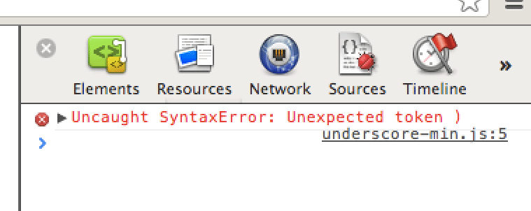
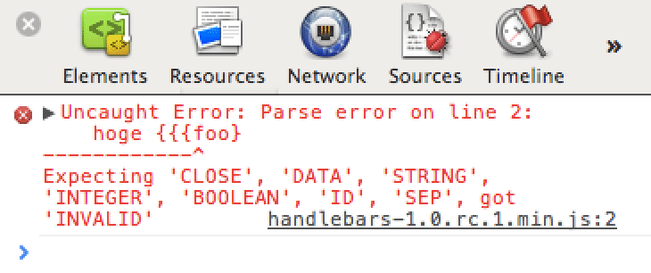
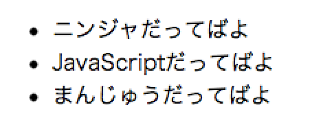

Handlebars.js
Takeshi Takatsudo (@Takazudo)
_.template
<div class="block">
<h2><%- title %></h2>
<p><%= content1 %></p>
<p><%- content2 %></p>
</div>var compile = _.template(src);
var data = { title: 'hoge', ... };
var html = compile(data); // コンパイル結果
属性とか書く時読み辛い
<a
href="<%- url %>"
<% if(target){ %>
target="<%- target %>"
<% } %>
>
<%- item.url %>
</a>
シンプルだけど冗長
<% _(items).each(function(item, i){ %>
<% if(item.items){ %>
...
<% } else { %>
...
<% } %>
<% }); %>
入れ子が超深くなる
<% _(items).each(function(item, i){ %>
<% if(item.items){ %>
<% _(items).each(function(item, i){ %>
<% if(item.pcFlag === 1){ %>
...
...
...
<% } %>
<% }); %>
<% }); %>
エラーがわからん
Underscore.js
- シンプルなのでいい
- でもその分たいしたことない
JSONもらってほぼフロントだけでなんかするみたいなときにはちょっと役不足かも
jQuery Templates
- 入れ子が超深くなる問題
- エラーがわからん問題
- オワコン
Handlebars.js
http://handlebarsjs.com/
- 結構頑張って作ってるっぽい
- jQuery conferenceでもTシャツ売ってた
- jQuery conferenceでもワインオープナー売ってた
- ember.js (client MVCライブラリ) でも使ってる風
基本文法
- エスケープする {{val}}
- エスケープしない {{{val}}}
- {{#each items}} … {{/each}}
- {{#if condition}} … {{/if}}
{{#if person.name}}
I am {{name}}.
{{/if}}{{ }}なので比較的見やすい
<div id="{{{id}}}">
<a
href="{{{url}}}"
{{#if target}} target="{{target}}"{{/if}}
>
{{linkText}}
</a>
</div>
エラー箇所を教えてくれる
なぜテンプレートの入れ子が深くなるか
入れ子が深くなる時はどういう時か
{
products: [
{ tags: [...], ... },
{ tags: [...], ... },
{ tags: [...], ... }
]
}
連続する何かの中に連続する何か
<table>
<tr>
<th>商品</th>
{{#each products}}
{{#if tags}}
{{#each tags}}
<a href="{{link}}">{{name}}</a>
{{/each}}
...
{{/if}}
{{/each}}
</tr>
</table>
アイテムだけ定義
<script type="x-hoge/text" id="item">
{{#if tags}}
{{#each tags}}
<a href="{{link}}">{{name}}</a>
{{/each}}
...
{{/if}}
</script>
アイテムを参照
<script type="x-hoge/text" id="table">
<table>
<tr>
<th>商品</th>
{{#each products}}
{{> item}}
{{/each}}
</tr>
</table>
</script>
registerPartial
var item = $('#item').html();
Handlebars.registerPartial('item', item);
// これやれば >item で参照できる
var table = $('#table').html();
var data = {...};
var compile = Handlebars.compile(table);
$('#somewhere').html( compile(data) );
自分でヘルパー登録できる
<script type="x-hoge/text" id="src">
{{#dattebayolist items}}
{{this}}
{{/dattebayolist}}
</script>var data = {
items: [ 'ニンジャ', 'JavaScript', 'まんじゅう' ]
};
var compile = Handlebars.compile($('#src').html());
$('body').append( compile(data) );
dattebayolist
Handlebars.registerHelper('dattebayolist', function(items) {
var out = "<ul>";
for(var i=0, l=items.length; i<l; i++) {
out = out + "<li>" + items[i] + "だってばよ</li>";
}
return out + "</ul>";
});

まとめ
Handlerbars.js がイケてる点
- registerPartial
- エラー箇所がわかる
- {{}} だから見やすい
- 自分で拡張しやすい
- 結構開発されてる
おわり